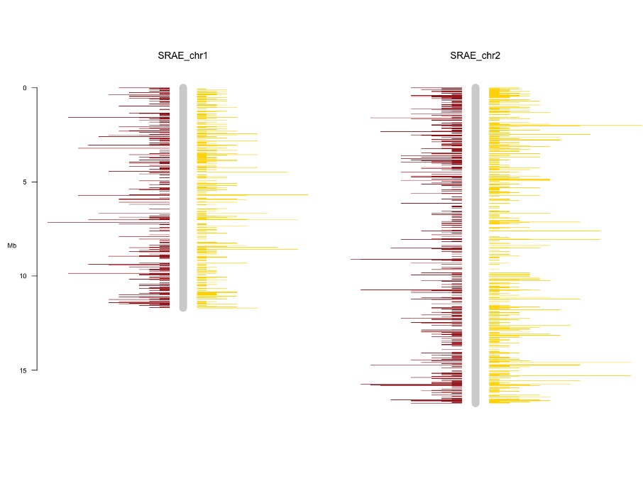
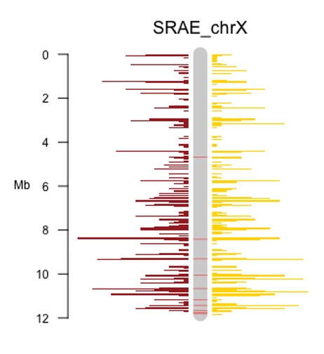

Other Tasks
This page covers some other bioinformatics tasks you may want to combine with the pipeline, using both programs included with and separate from the pipeline.
Plotting Genome Location
Basic Plot
A common task you might want to do is plotting the location of things within the genome, for example, genome features you are interested in or the positions of small RNAs you have aligned to the genome. To make this easy, a script is included in this environment called build_coord_files. This automatically generates tsv files for use with the R package chromPlot. This section explains how you can generate a plot with it.
Firstly, you need at least two files: a full genome in a FASTA or FASTQ file and a set of locations you are interested in, either as an alignment output (in SAM or BAM format) or as feature annotations in GFF format. To start produce the genome coordinate file with the command: (assuming genome.fasta is your genome file)
$ build_coord_files -o genome_coord.tsv genome.fasta
By default, the script will figure out what type of output to produce by the file extension. But if it can’t, the user will need to provide a flag to tell it what type of input you are using (in this case --fasta). Next we produce the coordinates file for the item of interest, assuming it is in alignment.sam you can run:
$ build_coord_files -o alignment_coord.tsv alignment.sam
This will produce two files, one for coordinates on the sense strand and one for coordinates on the antisense strand. Finally, we can use these files to plot the result. If it isn’t already, install chromPlot with bioconducter using the following R command:
> BiocManager::install("chromPlot")
Then you should be able to create a plot using the following R code (of two example chromosomes called "SRAE_chr1" and "SRAE_chr2"):
chrom_coords <- read.csv("/path/to/genome_coord.tsv", sep = "\t")
sense_pos <- read.csv("/path/to/sense_alignment_coord.tsv", sep = "\t")
antisense_pos <- read.csv("/path/to/antisense_alignment_coord.tsv", sep = "\t")
library(chromPlot)
chromPlot(
gaps = chrom_coords, annot1 = sense_pos, annot2 = antisense_pos, plotRndchr = T,
chr = c("SRAE_chr1", "SRAE_chr2"), bin = 50000,
chrSide = c(-1, 1, -1, -1, 1, -1, -1, 1)
)
The script breaks down as follows:
- First three lines load in the data we just produced with
build_coord_files - Following line loads the chromPlot library into R
- The final line plots the data with chromPlot:
gapsdefines what each chromosome should look likeannot1andannot2define the annotation data to showplotRndchrdisables the assumption in chromPlot that the chromosomes are labelled with numberschrselects which chromosomes to plot by specifying an array of namesbinsets the bin size to group the features into when plottingchrSidedefines which side of the chromosome to plot each feature, the only change we have made from the default is setting the second item to1as opposed to-1. This ensuresannot2is plotted on the opposite side toannot1
The resulting plot will look something like this:

Dealing with Multiple Scaffolds
In more complex cases, one or more of your chromosomes may be split into multiple scaffolds. build_coord_files has a scaffold aware mode that can automatically try to merge these, but it will only work if your scaffold’s IDs are in the form of <chromosome_name>_scaffold<scaffold_number> e.g. SRAE_chrX_scaffold1. Once you have this, you can generate the data files with the -c flag set, as follows:
$ build_coord_files -c -o genome_coord.tsv genome.fasta
$ build_coord_files -c --genome-coords genome_coord.tsv -o alignment_coord.tsv alignment.sam
Note you need to provide the genome coords file when generating files for what you are plotting, this allows for a correction of coordinates to be made from where scaffolds are merged. In addition to the regular files, this produces scaffold_info_genome_coord.tsv, that can be used to add scaffold dividers to your plots. To do this, the following R script can be run:
chrom_coords <- read.csv("/path/to/genome_coord.tsv", sep = "\t")
sense_pos <- read.csv("/path/to/sense_alignment_coord.tsv", sep = "\t")
antisense_pos <- read.csv("/path/to/antisense_alignment_coord.tsv", sep = "\t")
scaffolds <- read.csv("/path/to/scaffold_info_genome_coord.tsv", sep = "\t")
library(chromPlot)
chromPlot(
gaps = chrom_coords, annot1 = sense_pos, annot2 = antisense_pos, plotRndchr = T,
chr = c("SRAE_chr1", "SRAE_chr2"), bin = 50000, bands = scaffolds,
chrSide = c(-1, 1, -1, -1, 1, -1, -1, 1)
)
Compared to the last script, this adds:
- The fourth line, that loads in the scaffold data
- The bands argument, that draws red lines at the end of each scaffold
Note that, by default the bands are 20,000 bp wide, as that looks good on the plot. At that size they may not appear if you make the bins too much bigger. Therefore, if you plan to make the bins bigger, pass a larger value to the --band-width flag when creating the genome file. That makes the bands bigger, which results in a more visible line on the plot.
A plot produced by this method will look something like:

Signature Identification
TODO
AT/GC Richness
Nucleotide richness and the presence of any conserved motifs is identified using WebLogo. Sequences need to be the same length and can be either uploaded using a fasta file or can be pasted in.
Upstream motif (e.g. piRNA)
- Map to genome with bowtie2, convert sam to bam with
samtools, convert bamToBed withbedtools
$ bowtie2 -x genome.fasta -f -U sequences.fasta -S sequences_mapped.sam
$ samtools view sequences_mapped.sam -o sequences_mapped.bam
$ bamToBed -i sequences.bam > sequences.bed
- Extract flanking sequences with flankBed in
bedtools(need to use bedtools format genome file - generate with faidx and cut):
$ samtools faidx genome.fasta
$ cut -f 1,2 genome.fa.fai > chrom.sizes
$ flankBed -i sequences.bed -g chrom.sizes -b 100 > sequences_100nt_flank.bed
or for 60 upstream only:
$ flankBed -i sequences.bed -g chrom.sizes -l 60 -r 0 > sequnences_60nt.bed
- Extract fasta sequences from bed fastFromBed with bedtools.
$ fastaFromBed -fi genome.fasta -bed sequences_100nt_Flank.bed -fo sequences_100nt_Flank_seqs.fasta
Ping Pong signature
To find ping-pong signature, Unitas with the option -pp can be used to find 5’ overlaps of mapped sequence reads to the genome and calculate a Z-score for the enrichment of 10 bp overlaps. map.file should be in SAM or ELAND3 format.
$ perl unitas.pl -pp -input map.file –species x –refseq reference.fasta
Dicer Signature (StepRNA)
To install stepRNA, see the documentation on the GitHub page.
stepRNA is able to identify a Dicer processing signature from a small RNA sequence dataset. It requires two FASTA files as input that have had their adapters already trimmed from the ends.
$ stepRNA --reference REFERENCE.fa --reads READS.fa
- READS.fa should contain all of the small RNA sequencing reads.
- REFERENCE.fa is usually filtered to investigate small RNAs of interest e.g. 26G sRNAs.
Identical reads in the READ and REFERENCE files can also be removed before searching for a Dicer signature, if desired, by using -e/--remove_exact.
Importantly the FASTA headers must be unique - this can be done by stepRNA with -u/--make_unique.
stepRNA will then generate:
- BAM alignment files (with different combinations of overhang lengths)
- Overhang length CSV
- Passenger Read Length CSV
These can then be used to plot the distribution and/or further explore the reads that have aligned.
Note: If the sRNA lengths in the read file are all the same i.e. 21 nt long, stepRNA will not be able to find overhangs due to the scoring system. In this case the -m/--min_score should be set to an appropriate value; we recommend sRNA length - 7nt (e.g. 21 - 6 = 15).
Use stepRNA --help to bring up the command line help, a description of the methods can be found in the stepRNA publication.
stepRNA [-h] -r REFERENCE -q READS [-n NAME] [-d DIRECTORY]
[-m MIN_SCORE] [-e] [-u] [-j] [-V]
Align a reference RNA file to read sequences. Output will be a set of CSV files containing information about the length of the reads, number of reads aligned to a reference sequence and the length of overhangs of the alignment.
Reference RNA file will be automatically indexed
Optional Arguments:
-h, --help show this help message and exit
-n NAME, --name NAME Prefix for the output files
-d DIRECTORY, --directory DIRECTORY
Directory to store the output files
-m MIN_SCORE, --min_score MIN_SCORE
Minimum score to accept, default is the shortest read
length
Required Arguments:
-r REFERENCE, --reference REFERENCE
Path to the reference sequences
-q READS, --reads READS
Path to the read sequences
Flags:
-e, --remove_exact Remove exact read matches to the reference sequence
-u, --make_unique Make FASTA headers unique in reference and reads i.e.
>Read_1 >Read_2
-j, --write_json Write count dictionaries to a JSON file
-V, --version Print version number then exit.
Same Strand Overlap
If you wish to detect same strand overlaps, you can use the overlap_ss script that is installed in the same environment as this pipeline. This uses a number of bash programs to create files that show where two sets of small RNA that appear on the same strand overlap.
To use this script you need two sets of small RNA as FASTA or FASTQ files, one for the base and one for the overlap, plus the genome of the species of interest. You can then run the script in the following way:
$ overlap_ss genome.fasta smallRNA1.fastq smallRNA2.fastq
This script will then create output in the output directory specified in config.toml under the directory samestrand_overlap/.
miRNA
TODO